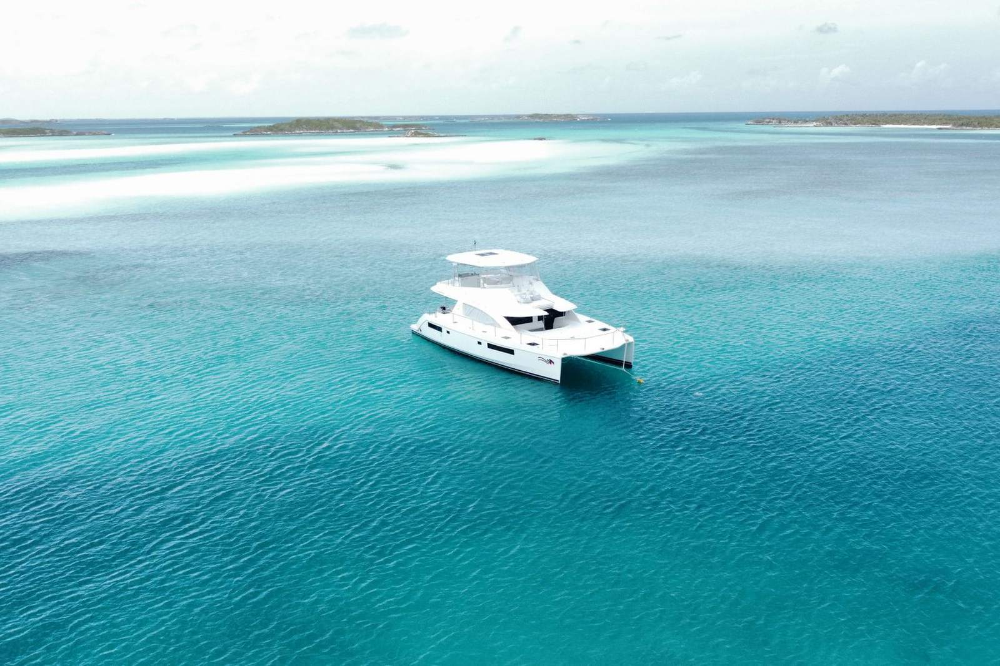
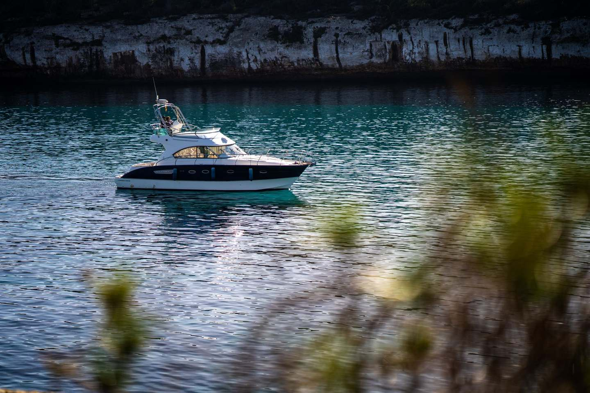
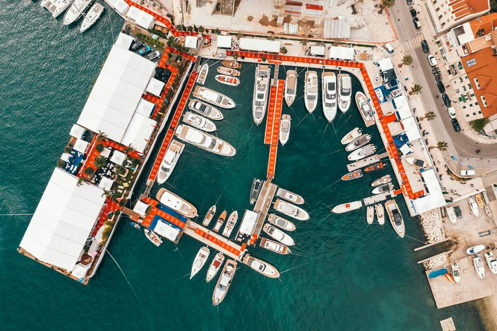

Yachtcharter in Pula
Ein Privatcharter, zugeschnitten auf Ihre Gruppe, Ihr Datum und Ihre Vorstellung vom perfekten Tag auf See.
- Dauer
- Stunden, ein Tag oder mehrere Tage
- Skipper
- Professionell oder mit eigenem Führerschein
- Start
- Marina Pula
- Buchung
- Individuelles Angebot
Die Küste nach Ihren Wünschen
Mit einer Yacht erleben Sie die südistrische Küste ohne Fahrplan: die Brijuni-Inseln, stille Buchten und Badeplätze abseits der Menschenmengen. Ein Charter ist als Halbtagestörn, ganztägig oder über mehrere Tage möglich, mit professionellem Skipper oder, wenn Sie den passenden Führerschein besitzen, in Eigenregie.
Wofür Gäste eine Yacht chartern
Sonnenuntergang zu zweit
Ein romantischer Abend auf ruhigem Wasser.
Familientag auf See
Badestopps, Mittagessen an Deck und keine Eile.
Feiern
Geburtstage und private Partys auf dem Wasser.
Hochzeiten
Trauungen und Feiern mit Familie und Freunden.
So buchen Sie
Nennen Sie uns Ihre Reisedaten, die Zahl der Gäste und Ihre Wünsche. Wir melden uns mit passenden Möglichkeiten und einem Preis. Jeder Charter wird individuell zusammengestellt.
- Halber Tag, ganzer Tag oder mehrtägig
- Skipper auf Wunsch
- Hochzeiten, Partys, Feiern
- Abfahrt in Pula
Fotos



Ihren Charter planen
Den Monat früh wählen
Im Juli und August sind die Preise höher. Juni und September sind ruhiger und oft günstiger.
Nennen Sie uns die Personenzahl
Sie entscheidet darüber, welche Yachten in Frage kommen.
An das Essen denken
Ob Sie an Bord oder an Land zu Mittag essen, beeinflusst die Route, die wir vorschlagen.
Häufig gestellte Fragen
Können wir an Bord eine Hochzeit oder eine Feier ausrichten?
Können wir eine Sonnenuntergangsfahrt nur zu zweit buchen?
Wo essen wir bei einem Ganztagescharter?
Was brauchen Sie von uns für ein Angebot?
Sind Juni oder September eine gute Wahl?
Bereit zu buchen?
Senden Sie uns Ihre Reisedaten und die Gruppengröße. Wir prüfen die Verfügbarkeit und antworten innerhalb von 24 Stunden.